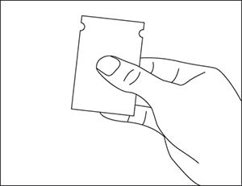
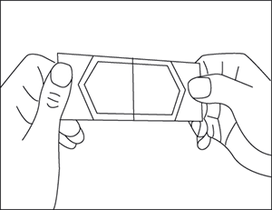
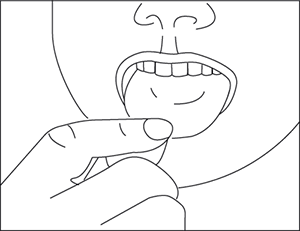

|
 |
| ИНВИДА ОДП (INVIDA ODF) sildenafil пленки, диспергир. в полости рта | ||||||||
|
Клинико-фармакологическая группа: Препарат для лечения эректильной дисфункции. Ингибитор ФДЭ-5 Номер и дата регистрации: ЛП-004358 от 30.06.17 Код ATX: G04BE03 |
Владелец регистрационного удостоверения: зарегистрировано Представительство: | |||||||
Форма выпуска, состав и упаковка Пленки, диспергируемые в полости рта, от бледно-голубого до голубовато-зеленого цвета, тонкие, прямоугольной формы.
Вспомогательные вещества: пуллулан - 47 мг, сукралоза - 7 мг, глицерин (глицерол) - 6.9 мг, макрогол 400 - 6.9 мг, аспартам (E951) - 4.82 мг, натрия гидрокарбонат - 4 мг, натрия гидроксид - 2.1 мг, мяты перечной листьев масло - 1 мг, краситель Kollicoat® IR бриллиантовый голубой (сополимер макрогола и поливинилового спирта, коповидон, титана диоксид (E171), каолин, натрия лаурилсульфат, краситель бриллиантовый голубой (E133)) - 0.05 мг, вода очищенная - 0.17 мл. 1 пленка - саше из ПЭТ/Ал/ПЭ фольги с ламинированным покрытием (1) - пачки картонные. | ||||||||
Описание препарата основано на официально утвержденной инструкции по применению и утверждено компанией-производителем для издания 2019 г. | ||||||||
Фармакологическое действие |
Фармакокинетика |
Показания |
Режим дозирования |
Побочное действие |
Противопоказания |
Беременность и лактация |
Особые указания |
Передозировка |
Лекарственное взаимодействие |
Условия хранения и сроки годности |
Условия реализации
Фармакологическое действие
Силденафил - мощный селективный ингибитор циклического гуанозинмонофосфата (цГМФ) - специфической фосфодиэстеразы 5 типа (ФДЭ5). Реализация физиологического механизма эрекции связана с высвобождением оксида азота (NO) в кавернозном теле во время сексуальной стимуляции. Это, в свою очередь, приводит к увеличению уровня цГМФ, последующему расслаблению гладкомышечной ткани кавернозного тела и увеличению притока крови. Силденафил не оказывает прямого расслабляющего действия на изолированное кавернозное тело человека, но усиливает эффект NO посредством ингибирования ФДЭ5, которая ответственна за распад цГМФ. Силденафил селективен в отношении ФДЭ5 in vitro, его активность в отношении ФДЭ5 превосходит активность в отношении других известных изоферментов фосфодиэстеразы: ФДЭ6 - в 10 раз; ФДЭ1 - более чем в 80 раз; ФДЭ2, ФДЭ4, ФДЭ7-ФДЭ11 - более чем в 700 раз. Силденафил в 4000 раз более селективен в отношении ФДЭ5 по сравнению с ФДЭ3, что имеет важнейшее значение, поскольку ФДЭ3 является одним из ключевых ферментов регуляции сократимости миокарда. Обязательным условием эффективности силденафила является сексуальная стимуляция. Применение силденафила в дозах до 100 мг не приводило к клинически значимым изменениям ЭКГ у здоровых добровольцев. Максимальное снижение систолического давления в положении лежа после приема силденафила в дозе 100 мг составило 8.3 мм рт.ст., а диастолического давления - 5.3 мм рт. ст. Более выраженное, но также преходящее действие на АД отмечалось у пациентов, принимавших нитраты. У некоторых пациентов через 1 ч после приема силденафила в дозе 100 мг с помощью теста Фарнсворта–Манселла 100 выявлено легкое и преходящее нарушение способности различать оттенки цвета (синего/зеленого). Через 2 ч после приема препарата эти изменения отсутствовали. Считается, что нарушение цветового зрения вызывается ингибированием ФДЭ6, которая участвует в процессе передачи света в сетчатке глаза. Силденафил не оказывает влияния на остроту зрения, восприятие контрастности, электроретинограмму, внутриглазное давление или диаметр зрачка. Фармакокинетика
Фармакокинетика силденафила в рекомендуемом диапазоне доз носит линейный характер. Всасывание После приема внутрь быстро всасывается. Cmax в плазме крови при приеме натощак достигается в течение 30-120 мин (в среднем через 60 мин), биодоступность составляет в среднем 41% (25-63%). При приеме с пищей Сmax снижается на 20-40%, а время достижения Сmax увеличивается на 60 мин. Однако степень абсорбции достоверно не изменяется (AUC снижается на 11%). Распределение Кажущийся Vd в равновесном состоянии составляет 105 л. Связь силденафила и его основного активного метаболита с белками плазмы крови составляет около 96% от введенной дозы и не является дозозависимой. Через 90 мин после однократного приема силденафила менее 0.0002% дозы (в среднем 188 нг) обнаружено в сперме. Метаболизм Силденафил в основном метаболизируется под действием изоферментов CYP3A4 (основной путь) и CYP2C9 (дополнительный путь) микросомальных изоферментов печени. Основным циркулирующим активным метаболитом является N-десметилметаболит, активность которого в отношении фосфодиэстеразы составляет 50% активности силденафила, а его концентрация в плазме крови достигает 40% концентрации силденафила. N-десметилметаболит подвергается дальнейшему метаболизму с Т1/2 4 ч. Выведение Общий клиренс силденафила составляет 41 л/ч, а конечный Т1/2 - 3-5 ч. После приема внутрь силденафил выводится в виде метаболитов, в основном, кишечником (около 80% от принятой внутрь дозы) и, в меньшей степени, почками (около 13% от принятой внутрь дозы). Фармакокинетика у особых групп пациентов У пожилых пациентов (65 лет и старше) клиренс силденафила снижен, концентрация свободного силденафила и его активного метаболита увеличена приблизительно на 90% по сравнению с пациентами в возрасте 18-45 лет. Концентрация силденафила в плазме крови, не связанного с белками составляет 40%. У пациентов с легкой или умеренной почечной недостаточностью (КК 30-80 мл/мин) фармакокинетика силденафила не изменяется при приеме 50 мг, а Сmax и AUC для N-десметилметаболита увеличиваются на 73% и 126% соответственно. У пациентов с тяжелой почечной недостаточностью (КК менее 30 мл/мин) клиренс силденафила снижается, в результате Сmax и AUC увеличиваются на 88% и 100% соответственно по сравнению с пациентами с нормальной функцией почек той же возрастной группы. Cmax и AUC N-десметилметаболита увеличиваются на 79% и 200% соответственно. У пациентов с циррозом печени (классы А и В по шкале Чайлд-Пью) клиренс силденафила снижается, Сmax и AUC увеличиваются на 47% и 84% соответственно по сравнению с пациентами с нормальной функцией печени той же возрастной группы. Фармакокинетика силденафила у пациентов с тяжелыми нарушениями функции печени (класс С по шкале Чайлд-Пью) не изучалась. Показания
Силденафил эффективен только при сексуальной стимуляции. Режим дозирования
Препарат Инвида ОДП предназначен для приема внутрь и не требует запивания водой, однако при желании можно запивать препарат водой. Пленки следует принимать приблизительно за 1 ч до планируемой сексуальной активности. При приеме Инвида ОДП во время еды начало действия препарата может задерживаться по сравнению с приемом препарата натощак. Рекомендуемая доза препарата Инвида ОДП составляет 50 мг (1 пленка). С учетом эффективности и переносимости доза препарата может быть увеличена до 100 мг. Максимальная разовая доза составляет 100 мг 1 раз/сут. Употребление алкоголя может временно ухудшить способность к достижению эрекции. Чтобы получить максимальную пользу от препарата, не рекомендуется злоупотреблять алкоголем до начала приема силденафила. У пациентов пожилого возраста коррекция дозы не требуется. У пациентов с легкой или умеренной почечной недостаточностью (КК 30-80 мл/мин) коррекция дозы не требуется. У пациентов с тяжелой почечной недостаточностью (КК менее 30 мл/мин) назначение препарата следует обязательно согласовать с лечащим врачом. У пациентов с легкой и умеренной печеночной недостаточностью назначение препарата следует обязательно согласовать с лечащим врачом. Пациенты, получающие сопутствующее лечение другими ингибиторами изофермента CYP3A4 (эритромицин, саквинавир, кетоконазол, итраконазол), перед началом применения препарата должны проконсультироваться с врачом. Для уменьшения риска развития ортостатической гипотензии у пациентов, принимающих альфа-адреноблокаторы, прием силденафила следует начинать только после стабилизации их состояния на фоне терапии альфа-адреноблокаторами и консультации с лечащим врачом. Способ применения Важно: не следует прикасаться к пленке влажными руками. 1. Взять саше, найти отметку с надписью "открыть" на одной из коротких сторон.  2. Осторожно открыть саше, потянув за свободные края в противоположных направлениях, отделив их друг от друга, и освободить пленку.  3. Сухими пальцами взять пленку из саше и поместить ее в полость рта - на язык, после чего пленка быстро растворится в слюне, которая может быть легко проглочена.  Побочное действие
Побочные эффекты классифицированы согласно следующей частоте: очень часто (не менее 10%); часто (не менее 1%, но менее 10%); нечасто (не менее 0.1%, но менее 1%); редко (не менее 0.01%, но менее 0.1%); очень редко (менее 0.01%, в т.ч. единичные случаи). Со стороны нервной системы: очень часто - головная боль; часто - головокружение; нечасто - сонливость, гипестезия; редко - нарушение мозгового кровообращения, обморок; частота неизвестна - транзиторная ишемическая атака, судороги, в т.ч. рецидивирующие. Со стороны органа зрения: часто - нарушение зрения, нарушение цветовосприятия; нечасто - поражение конъюнктивы, нарушение слезотечения; частота неизвестна - передняя ишемическая оптическая невропатия, окклюзия сосудов сетчатки, дефекты полей зрения. Со стороны органа слуха: нечасто - вертиго, шум в ушах; редко - глухота. Со стороны сердечно-сосудистой системы: часто - "приливы"; нечасто - ощущение сердцебиения, тахикардия; редко - повышение или снижение АД, инфаркт миокарда, фибрилляция предсердий; частота неизвестна - желудочковая аритмия, нестабильная стенокардия, внезапная смерть. Со стороны органов дыхания: часто - заложенность носа; редко - носовое кровотечение. Со стороны ЖКТ: часто - диспепсия; нечасто - рвота, тошнота, сухость слизистой оболочки полости рта. Со стороны половых органов: нечасто - гематоспермия, кровотечение из полового члена; частота неизвестна - приапизм, пролонгированная эрекция. Аллергические реакции: нечасто - кожная сыпь; частота неизвестна - синдром Стивенса-Джонсона, токсический эпидермальный некролиз (синдром Лайелла). Прочие: редко - боль в груди, усталость. Противопоказания
С осторожностью:
Применение при беременности и кормлении грудью
По зарегистрированному показанию препарат не предназначен для применения у женщин. Особые указания
Для диагностики нарушений эрекции, определения их возможных причин и выбора адекватного лечения необходимо собрать полный медицинский анамнез и провести тщательное физикальное обследование. Средства лечения эректильной дисфункции должны использоваться с осторожностью у пациентов с анатомической деформацией полового члена (ангуляция, кавернозный фиброз, болезнь Пейрони), или у пациентов с факторами риска развития приапизма (серповидно-клеточная анемия, множественная миелома, лейкемия). Сексуальная активность представляет определенный риск при наличии заболеваний сердца, поэтому перед началом любой терапии по поводу нарушений эрекции врачу следует направить пациента на обследование состояния сердечно-сосудистой системы. Препараты, предназначенные для лечения нарушений эрекции, не следует назначать мужчинам, для которых сексуальная активность нежелательна (см. раздел "Противопоказания"). Сердечно-сосудистые осложнения В ходе постмаркетингового применения силденафила для лечения эректильной дисфункции сообщалось о таких нежелательных явлениях, как серьезные сердечно-сосудистые осложнения (в т.ч. инфаркт миокарда, нестабильная стенокардия, внезапная сердечная смерть, желудочковая аритмия, геморрагический инсульт, транзиторная ишемическая атака, гипертензия и гипотензия), которые имели временную связь с применением силденафила. Большинство этих пациентов, но не все из них, имели факторы риска сердечно-сосудистых осложнений. Многие из указанных нежелательных явлений наблюдались вскоре после сексуальной активности, некоторые из них отмечались после приема силденафила без последующей сексуальной активности. Не представляется возможным установить наличие прямой связи между отмечавшимися нежелательными явлениями и указанными или иными факторами. Гипотензия Силденафил оказывает системное вазодилатирующее действие, приводящее к преходящему снижению АД, что не является клинически значимым явлением и не приводит к каким-либо последствиям у большинства пациентов. Тем не менее, до назначения препарата Инвида ОДП врач должен тщательно оценить риск возможных нежелательных проявлений вазодилатирующего действия у пациентов с соответствующими заболеваниями, особенно на фоне сексуальной активности. Повышенная восприимчивость к вазодилататорам наблюдается у пациентов с обструкцией выходного тракта левого желудочка сердца (стеноз аорты, гипертрофическая обструктивная кардиомиопатия), а также с редко встречающимся синдромом множественной системной атрофии, проявляющимся тяжелым нарушением регуляции АД со стороны вегетативной нервной системы. Поскольку совместное применение силденафила и альфа-адреноблокаторов может привести к симптоматической гипотензии у отдельных чувствительных пациентов, силденафил следует с осторожностью назначать пациентам, принимающим альфа-адреноблокаторы. Чтобы свести к минимуму риск развития постуральной гипотензии у пациентов, принимающих альфа-адреноблокаторы, начинать принимать силденафил следует только после того, как будет достигнута стабилизация гемодинамики у этих пациентов. Следует рассмотреть целесообразность снижения начальной дозы силденафила. Кроме того, врач должен проинформировать пациентов о том, какие действия следует предпринять в случае появления симптомов постуральной гипотензии. Зрительные нарушения При возникновении дефекта зрения следует немедленно обратиться к врачу. Нарушение слуха В некоторых постмаркетинговых и клинических исследованиях с использованием всех ингибиторов ФДЭ5, включая силденафил, сообщалось о внезапном снижении или потере слуха у пациентов. Однако в большинстве случаев у этих пациентов имелись факторы риска развития данной патологии, и не было выявлено никакой корреляции между применением ингибиторов ФДЭ5 и внезапным снижением или потерей слуха. Пациента следует предупредить о том, что в случае внезапного снижения или потери слуха необходимо прекратить терапию силденафилом и немедленно проконсультироваться с врачом. Кровотечения Силденафил усиливает антиагрегационный эффект нитропруссида натрия (донатора оксида азота) на тромбоциты человека in vitro. Сведения о безопасности применения силденафила у пациентов с внутренними кровотечениями или активной пептической язвой желудка отсутствуют, поэтому препарат следует применять с осторожностью. Применение совместно с другими средствами для лечения нарушений эрекции Безопасность и эффективность силденафила совместно с другими средствами для лечения нарушений эрекции не изучались, поэтому применение подобных комбинаций не рекомендуется. Влияние на способность к управлению транспортными средствами и механизмами Поскольку возможно снижение АД, развитие нарушения зрения, следует внимательно относиться к индивидуальному действию препарата, особенно в начале лечения и при изменении режима дозирования, и соблюдать осторожность при вождении автотранспорта и занятиях потенциально опасными видами деятельности, требующими повышенной концентрации внимания и быстроты психомоторных реакций. Передозировка
При однократном приеме препарата в дозе до 800 мг нежелательные явления были сопоставимы с таковыми при приеме препарата в более низких дозах, но встречались чаще. Лечение: симптоматическая терапия. Гемодиализ неэффективен, поскольку силденафил прочно связывается с белками плазмы крови и не выводится с мочой. Лекарственное взаимодействие
Метаболизм силденафила происходит в основном в печени под действием изоферментов CYP3A4 (основной путь) и CYP2C9, поэтому ингибиторы этих изоферментов могут снижать, а индукторы соответственно увеличивать клиренс силденафила. При одновременном применении ингибиторов CYP3A4 (таких как кетоконазол, эритромицин, циметидин) отмечено снижение клиренса силденафила. Циметидин (800 мг), являющийся неспецифическим ингибитором CYP3A4, при одновременном приеме с силденафилом (50 мг) вызывает повышение концентрации силденафила в плазме на 56%. Однократный прием силденафила в дозе 100 мг одновременно с эритромицином, специфическим ингибитором CYP3A4 (при приеме эритромицина 2 раза/сут по 500 мг в течение 5 дней), на фоне достижения постоянной концентрации эритромицина в крови приводит к увеличению AUC силденафила на 182%. При одновременном применении силденафила (однократно в дозе 100 мг) и саквинавира, являющегося как ингибитором ВИЧ-протеазы, так и ингибитором CYP3A4 (при приеме саквинавира 3 раза/сут в дозе 1200 мг), на фоне достижения постоянной концентрации саквинавира в крови, Сmax силденафила в крови повышалась на 140%, a AUC увеличивалась на 210%. Силденафил не оказывает влияния на фармакокинетические параметры саквинавира. Более мощные ингибиторы изофермента CYP3A4, такие как кетоконазол или итраконазол, могут вызывать более выраженные изменения фармакокинетики силденафила. Одновременное применение силденафила (однократно в дозе 100 мг) и ритонавира, являющегося ингибитором ВИЧ-протеазы и мощным ингибитором изоферментов системы цитохрома Р450 (при приеме ритонавира по 500 мг 2 раза/сут), на фоне достижения постоянной концентрации ритонавира в крови, Сmax силденафила увеличивалась на 300% (в 4 раза), а AUC - на 1000% (в 11 раз). Через 24 ч концентрация силденафила в плазме крови приблизительно составляла 200 нг/мл (при однократном применении одного силденафила - 5 нг/мл), что согласуется с информацией о выраженном эффекте ритонавира на фармакокинетику различных субстратов цитохрома Р450. Силденафил не оказывает влияния на фармакокинетику ритонавира. Сочетанное применение силденафила с ритонавиром не рекомендуется. Грейпфрутовый сок, слабый ингибитор CYP3A4, может умеренно повышать плазменные концентрации силденафила. Однократный прием антацида (магния гидроксида/алюминия гидроксида) не влияет на биодоступность силденафила. Ингибиторы CYP2C9 (такие как толбутамид, варфарин), CYP2D6 (такие как селективные ингибиторы обратного захвата серотонина, трициклические антидепрессанты), тиазиды и тиазидоподобные диуретики, ингибиторы АПФ и антагонисты кальция не оказывают влияния на фармакокинетические параметры силденафила. Одновременный прием азитромицина (500 мг/сут в течение 3 дней) не оказывает влияния на AUC, Cmax, Тmax, константу скорости выведения и Т1/2 силденафила или его основного циркулирующего метаболита. Никорандил представляет собой гибрид нитрата и активатора калиевых каналов. Из-за наличия нитратного компонента никорандил может вступать в серьезное взаимодействие с силденафилом и привести к тяжелой артериальной гипотензии. Влияние силденафила на другие лекарственные средства Силденафил является слабым ингибитором изоферментов системы цитохрома Р450 1А2, 2С9, 2С19, 2D6, 2Е1 и 3А4 (ИК50 >150 мкМ). Маловероятно, что силденафил может повлиять на клиренс субстратов этих изоферментов. Силденафил усиливает гипотензивное действие нитратов, как при длительном применении, так и при применении по острым показаниям. В связи с этим применение силденафила в сочетании с нитратами или донаторами оксида азота противопоказано. При одновременном приеме альфа-адреноблокатора доксазозина (4 и 8 мг) и силденафила (25, 50 и 100 мг) у пациентов с доброкачественной гиперплазией предстательной железы со стабильной гемодинамикой среднее дополнительное снижение систолического/диастолического АД в положении лежа на спине составляло 7/7, 9/5 и 8/4 мм рт.ст. соответственно, а в положении стоя - 6/6, 11/4 и 4/5 мм рт.ст. соответственно. Сообщалось о редких случаях развития у таких пациентов симптоматической постуральной гипотензии, проявлявшейся в виде головокружений (без обморока). У отдельных чувствительных пациентов, получающих альфа-адреноблокаторы, одновременное применение силденафила может привести к симптоматической гипотензии. Признаков значимого взаимодействия силденафила (50 мг) с толбутамидом (250 мг) или варфарином (40 мг), которые метаболизируются CYP2C9, не выявлено. Силденафил в дозе 100 мг не оказывает влияния на фармакокинетические параметры ингибиторов ВИЧ-протеазы при их постоянной концентрации в крови, таких как саквинавир и ритонавир, одновременно являющихся субстратами CYP3A4. Силденафил (50 мг) не вызывает дополнительного увеличения времени кровотечения при приеме ацетилсалициловой кислоты (150 мг). Силденафил (50 мг) не усиливает гипотензивное действие этанола у здоровых добровольцев при максимальном уровне этанола в крови в среднем 80 мг/дл. У пациентов с артериальной гипертензией признаков взаимодействия силденафила (100 мг) с амлодипином не выявлено. Среднее дополнительное снижение АД в положении лежа составляет: систолического - на 8 мм рт.ст., диастолического - на 7 мм рт. ст. Применение силденафила в сочетании с антигипертензивными средствами не приводит к возникновению дополнительных побочных эффектов. |
||||||||
Вернуться наверх |
||||||||
Copyright © Справочник Видаль «Лекарственные препараты в России», Москва, Россия